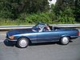

driving

Definition: Driving is the controlled operation and movement of a vehicle, including cars, motorcycles, trucks, buses, and bicycles. Permission to drive on public highways is granted based on a set of conditions being met and drivers are required to follow the established road and traffic laws in the location they are driving. The word driving, has etymology dating back to the 15th century and has developed as what driving has encompassed has changed from working animals in the 15th to automobiles in the 1800s. Driving skills have also developed since the 15th century with physical, mental and safety skills being required to drive. This evolution of the skills required to drive have been accompanied by the introduction of driving laws which relate to not only the driver but the driveability of a car.
Source: Wikipedia
Wikipedia Page
Wikidata Page